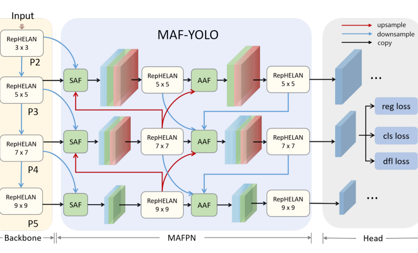
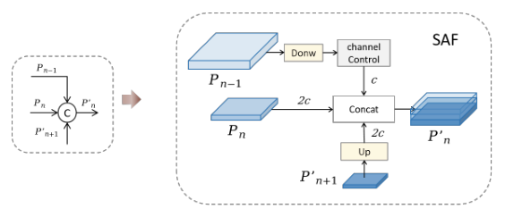
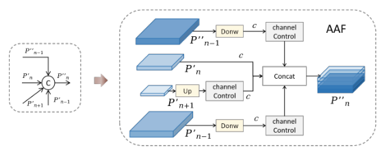
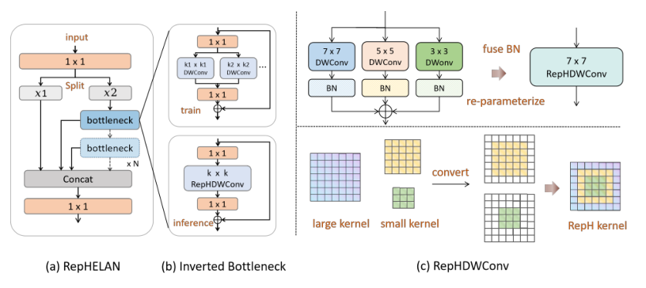
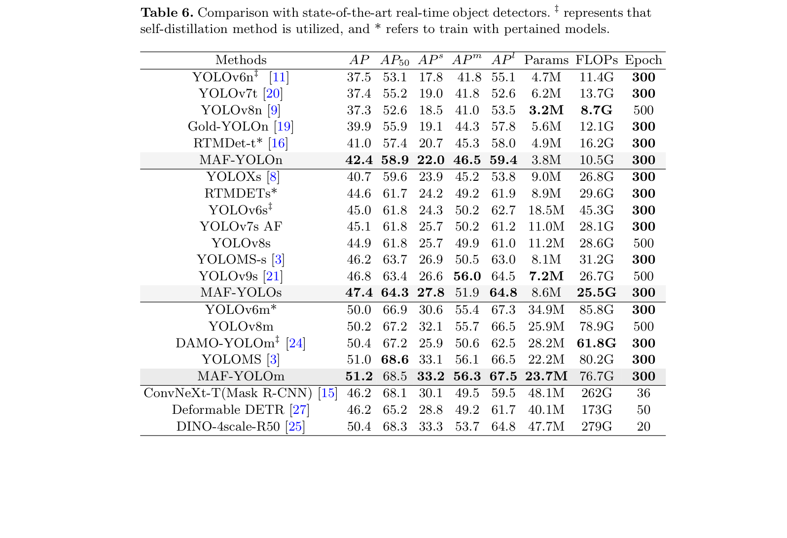
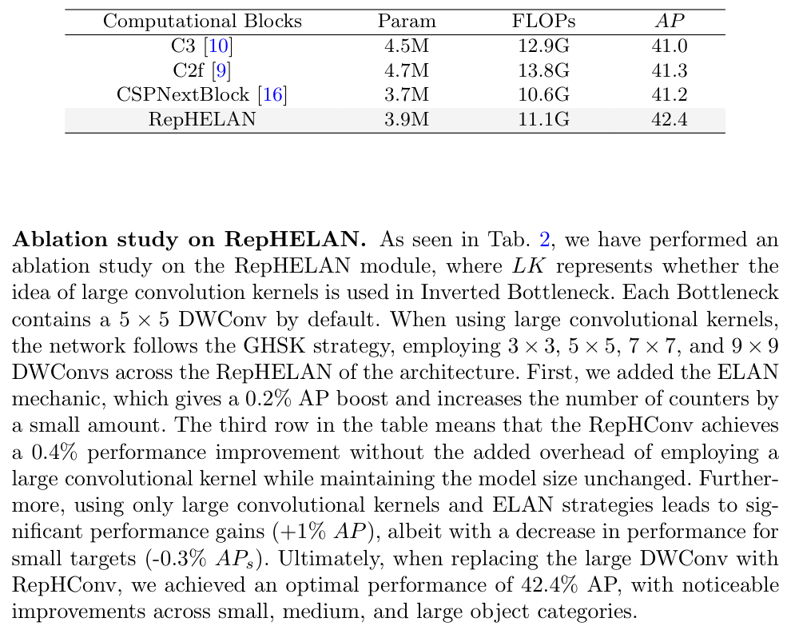
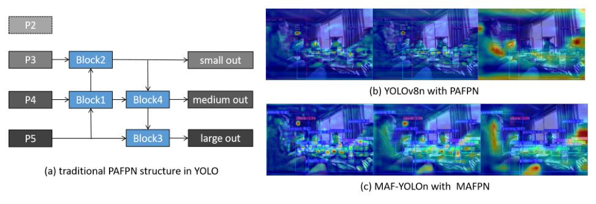

针对 PAFPN 跨分辨率融合不足与梯度路径单一的问题，提出 SAF 与 AAF 两级辅助融合，配合 RepHELAN 与 GHSK 实现零推理开销的异构卷积。
以双向连接把骨干浅层空间信息作为辅助分支并入颈部，保留丰富的定位细节。
以多向连接把更丰富的梯度信息传递给输出层，显著增强中等尺寸目标性能。
训练期并行多尺度深度卷积、推理期重参数化合并为一个，零推理开销扩大感受野。
MAF-YOLOn 以 3.76M 参数与 10.51G FLOPs 取得 42.4% AP，超过 YOLOv8n 约 5.1%。
各融合块倾向合并同质尺度的特征图，缺乏跨分辨率层信息整合。例如第一个块只有上采样 P5 与同层 P4，忽略了 P3 层的浅层空间信息。
小目标检测层特征只由单一自底向上路径与两个融合块供给，显著削弱了模型对微小物体特征的学习与表达能力。
暂未有颈部结构能在保留适量浅层空间信息的同时，向输出层传递足够多样的多尺度梯度信息。

P'n = concat(δ(C(Down(Pn-1))), Pn, U(P'n+1))






以双向与多向连接同时保留浅层定位信息并丰富输出层梯度路径，消融完整。
训练期并行多尺度 DWConv、推理期重参数化合并，以零推理代价扩大感受野并兼顾小目标。
MAFPN 在 YOLOv8n 与两阶段 Cascade Mask R-CNN 上替换颈部均获一致增益。